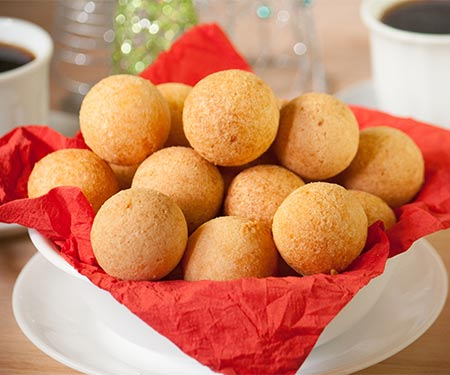

<!DOCTYPE html>
<html lang="en">
    <head>
        <meta charset="utf-8">
        <title>Colombian Bunuelos</title>
    </head>
</html>

<body>
    <h1>Colombian Bunuelos</h1>
    
</body>

<body>
    <h4>Description</h4>
    <p>Colombian Bunuelos or cheese fritters, are a mouthful of textures and flavors. They contain a soft crumb yet crispy crust</p>
    <p>that are coated in a sweetness and are a typical Colombian Christmas treat. They are made with a mixture of cassava flour and</p>
    <p>cornstarch. Cassava, tapioca, or yuca, are all roots used in South America and are great for gluten-free snacks!</p>
</body>

<body>
    <h4>Ingredients</h4>
        <ul>
            <li>1 cup cassava flour</li>
            <li>1/2 cup cornstarch</li>
            <li>1 cup shredded cheese</li>
            <li>2 tablespoons sugar</li>
            <li>1 tablespoon salt</li>
            <li>1/2 teaspoon baking powder</li>
            <li>2 tablespoons butter, room temp</li>
            <li>1 egg</li>
            <li>2 tablespoons milk</li>
            <li>3 cupos of vegetable oil, for frying</li>
        </ul>
    <h4>Directions</h4>
        <ol>
            <li><p>In a mixing bowl, add cassava flour, cornstarch, cheese, sugar,</p> 
                <p>salt, baking powder, butter, and egg</p></li>
            <li> Bring the dough together with milk</li>
            <li>In a medium pan, heat oil on low or keep between 320-340 F</li>
            <li>Divide the dough in 32 equal portions. Roll the dough into balls</li>
            <li>Fry 3 to 4 bunuelos at a time, for 5 minutes</li>
            <li>Place them on a paper towel, serve immediately</li>
        </ol>
</body>